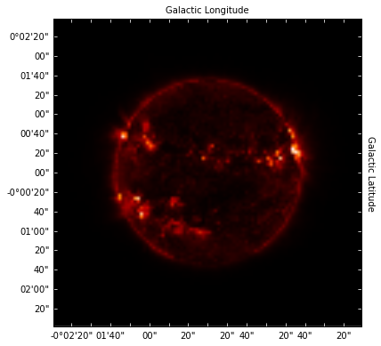

Entry 1¶
Plotting solar fits file as a matplotlib object¶
Prateek Chanda
The data is a fits file of a solar surface image collected from SDO (Solar Data Observatory) which has been re-sampled. The figure shows the intensity of the solar surface as observed measuring along the two axes. The corners of the image have low intensity (as close as 0 intensities). The intensity of the solar plot gradually rises as we reach towards the inner part of the solar surface. There are few regions of low intensity on the solar surface indicating solar spot regions.
In the corresponding function, user control has been provided to set the axes ticks, ticks position, the labels position along with provision for scientific formats for the axes ticks. Also provision for using any such fits file has been made in the corresponding function. The user can set the position of the labels anywhere as they wish. Also they get the freedom of specifying the spacing between adjacent ticks. The current axes units are in degrees. The users can specify in arcsecs also, but the unit should need to be matched with corresponding WCS object unit, otherwise it will specify an error.
Using this intensity graph of the solar plot we can see which regions in the solar surface have a higher intensity , indicating regions having a high solar flares. Also users may wish to locate those regions in the solar plot where there are local peaks in the intensity.
The code has used module called SunPy for creating the solar map object (a numpy nd array). It has also used Astropy Module to calculate the WCS object from the header of the fits file. And lastly it uses matplotlib to make the plot and use corresponding functionalities of the plot axes.